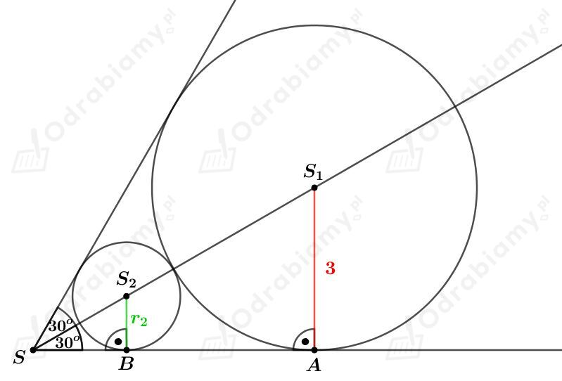

a)
Dany jest ciąg (an) określony wzorem
gdzie p jest parametrem.
Wzór tego ciągu zapiszmy jako:
Wyznaczmy granicę tego ciągu. Mamy:
Z treści zadania wiemy, że granicą tego ciągu jest liczba 6. Mamy stąd równanie:
b)
Dany jest ciąg (an) określony wzorem
gdzie p jest parametrem.
Wzór tego ciągu zapiszmy jako:
Wyznaczmy granicę tego ciągu. Mamy:
Z treści zadania wiemy, że granicą tego ciągu jest liczba 6. Mamy stąd równanie:
Dana jest granica
gdzie a i b są parametrami.
Granicą podanego ciągu jest granica niewłaściwa, więc stopień wielomianu w liczniku ułamka jest wyższy od stopnia wielomianu w mianowniku ułamka.
Stąd otrzymujemy b=0.
Dalej mamy:
czyli
Odp. a>0 i b=0.
Dany jest szereg geometryczny o pierwszym wyrazie a1=1 oraz ilorazie
Wykażemy, że podany szereg jest zbieżny.
Zauważmy, że
Korzystając ze wzoru na sinus sumy kątów mamy:
Więc
Zatem dla dowolnego badanego 𝛼 podany szereg jest zbieżny.
Wyznaczmy wartość 𝛼 dla której suma tego szeregu jest równa √2+2. Mamy stąd:
czyli
Dany jest nieskończony ciąg geometryczny (an), n∈N+, o pierwszym wyrazie a1 oraz ilorazie q.
Suma wszystkich jego wyrazów jest równa 8, natomiast suma pierwszego i trzeciego wyrazu jest równa 15. Mamy stąd układ równań postaci:
czyli
Rozwiązując drugie równanie układu mamy:,
czyli
Wyznaczmy a1. Mamy:
więc
Dany jest nieskończony ciąg geometryczny (an), n∈N+, o pierwszym wyrazie a1 oraz ilorazie |q|<1.
Suma wyrazów o numerach parzystych tego ciągu jest równa 6, a suma wyrazów o numerach nieparzystych jest równa 9. Mamy stąd:
Dany jest nieskończony ciąg geometryczny (an), n∈N+, o pierwszym wyrazie a1 oraz ilorazie |q|<1.
Suma wszystkich wyrazów tego ciągu jest równa 10, a suma kwadratów tych wyrazów jest równa 60. Mamy stąd:
Rozwiązując drugie równanie układu otrzymujemy:
czyli
więc
Podsumowując, otrzymaliśmy, że
Dany jest niebieski trójkąt równoboczny o boku długości 1.
W podany trójkąt wpisano czerwony trójkąt tak, że jego wierzchołki są środkami boków wyjściowego trójkąta. Podaną procedurę powtórzono nieskończenie wiele razy.
Zatem największy trójkąt czerwony ma bok długości 1/2.
Kolejny trójkąt niebieski otrzymano według tej samej procedury, czyli jego bok ma długość 1/4.
Kolejny trójkąt czerwony otrzymano według tej samej procedury, czyli jego bok ma długość 1/8.
...
a)
Obwód pierwszego trójkąta czerwonego wynosi:
Obwód drugiego trójkąta czerwonego wynosi:
Obwód trzeciego trójkąta czerwonego wynosi:
...
Obwody kolejnych trójkątów czerwonych tworzą szereg geometryczny o pierwszym wyrazie a1=3/2 oraz o ilorazie q=1/4∈(-1, 1).
Wyznaczmy sumę S obwodów wszystkich trójkątów czerwonych. Korzystając ze wzoru na sumę szeregu geometrycznego mamy:
Odp. Suma obwodów wszystkich trójkątów czerwonych wynosi 2.
b)
Pole pierwszego trójkąta niebieskiego wynosi:
Pole drugiego trójkąta niebieskiego wynosi:
Pole trzeciego trójkąta niebieskiego wynosi:
...
Pola kolejnych trójkątów niebieskich tworzą szereg geometryczny o pierwszym wyrazie a1=√3/4 oraz o ilorazie q=1/16∈(-1, 1).
Wyznaczmy sumę S pól wszystkich trójkątów niebieskich. Korzystając ze wzoru na sumę szeregu geometrycznego mamy:
Odp. Suma pól wszystkich trójkątów niebieskich wynosi 4√3/15.
W kąt o mierze 60o wpisano nieskończony ciąg kół stycznych do siebie zewnętrznie. Największe koło ma promień długości 3.
Rysunek:

Zauważmy, że środki tych okręgów leżą na dwusiecznej podanego kąta.
Rozważmy trójkąt SAS1. Korzystając ze związku między długościami boków w trójkącie o kątach 30o, 60o, 90o mamy:
Rozważmy trójkąt SBS2. Korzystając ze związku między długościami boków w trójkącie o kątach 30o, 60o, 90o mamy:
Zauważmy, że
Zatem:
Promień pierwszego koła ma długość 3.
Promień drugiego koła ma długość 1.
Promień trzeciego koła ma długość 1/3.
...
a)
Obwód pierwszego koła wynosi:
Obwód drugiego koła wynosi:
Obwód trzeciego koła wynosi:
...
Obwody kolejnych kół tworzą szereg geometryczny o pierwszym wyrazie a1=6𝜋 oraz o ilorazie q=1/3∈(-1, 1).
Wyznaczmy sumę S obwodów wszystkich tych kół. Korzystając ze wzoru na sumę szeregu geometrycznego mamy:
b)
Pole pierwszego koła wynosi:
Pole drugiego koła wynosi:
Pole trzeciego koła wynosi:
...
Pola kolejnych kół tworzą szereg geometryczny o pierwszym wyrazie a1=9𝜋 oraz o ilorazie q=1/9∈(-1, 1).
Wyznaczmy sumę S pól wszystkich tych kół. Korzystając ze wzoru na sumę szeregu geometrycznego mamy: